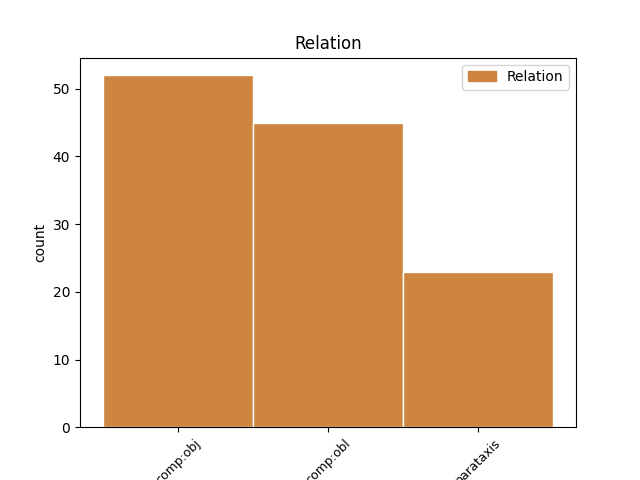
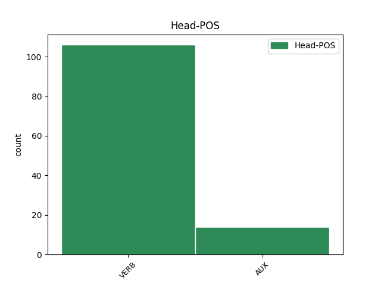
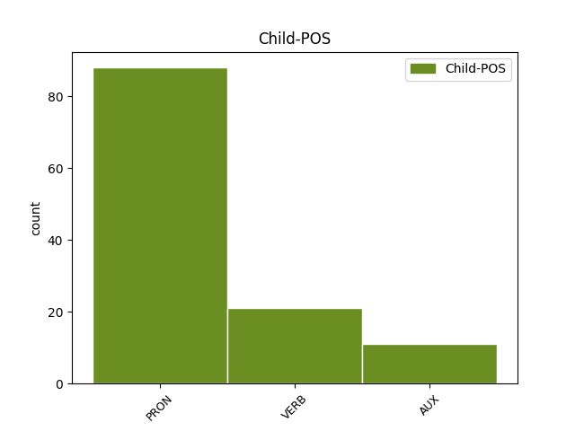

Distribution of features within this leaf



Agreement Rules sorted by frequency.
- When the dependent token is the direct object complements(comp:obj) of the head token,
1 Le _ _ _ _ 0 _ _ _
2 6 _ _ _ _ 0 _ _ _
3 août _ _ _ _ 0 _ _ _
4 , _ _ _ _ 0 _ _ _
5 Reuters _ _ _ _ 0 _ _ _
6 a _ _ _ _ 0 _ _ _
7 mis _ _ _ _ 0 _ _ _
8 un _ _ _ _ 0 _ _ _
9 terme _ _ _ _ 0 _ _ _
10 à _ _ _ _ 0 _ _ _
11 sa _ _ _ _ 0 _ _ _
12 collaboration _ _ _ _ 0 _ _ _
13 avec _ _ _ _ 0 _ _ _
14 Adnan _ _ _ _ 0 _ _ _
15 Hajj _ _ _ _ 0 _ _ _
16 qui _ _ _ _ 0 _ _ _
17 se se PRON _ Person=3|Reflex=Yes 18 comp:obj _ _
18 défendait défendre VERB _ Mood=Ind|Number=Sing|Person=3|Tense=Imp|VerbForm=Fin 0 _ _ _
19 en _ _ _ _ 0 _ _ _
20 expliquant _ _ _ _ 0 _ _ _
21 avoir _ _ _ _ 0 _ _ _
22 voulu _ _ _ _ 0 _ _ _
23 retirer _ _ _ _ 0 _ _ _
24 des _ _ _ _ 0 _ _ _
25 traces _ _ _ _ 0 _ _ _
26 de _ _ _ _ 0 _ _ _
27 poussières _ _ _ _ 0 _ _ _
28 sur _ _ _ _ 0 _ _ _
29 les _ _ _ _ 0 _ _ _
30 photos _ _ _ _ 0 _ _ _
31 originales _ _ _ _ 0 _ _ _
32 et _ _ _ _ 0 _ _ _
33 que _ _ _ _ 0 _ _ _
34 ses _ _ _ _ 0 _ _ _
35 conditions _ _ _ _ 0 _ _ _
36 de _ _ _ _ 0 _ _ _
37 travail _ _ _ _ 0 _ _ _
38 , _ _ _ _ 0 _ _ _
39 dans _ _ _ _ 0 _ _ _
40 un _ _ _ _ 0 _ _ _
41 lieu _ _ _ _ 0 _ _ _
42 peu _ _ _ _ 0 _ _ _
43 éclairé _ _ _ _ 0 _ _ _
44 , _ _ _ _ 0 _ _ _
45 avaient _ _ _ _ 0 _ _ _
46 conduit _ _ _ _ 0 _ _ _
47 à _ _ _ _ 0 _ _ _
48 ces _ _ _ _ 0 _ _ _
49 modifications _ _ _ _ 0 _ _ _
50 de _ _ _ _ 0 _ _ _
51 les _ _ _ _ 0 _ _ _
52 photos _ _ _ _ 0 _ _ _
53 [ _ _ _ _ 0 _ _ _
54 7 _ _ _ _ 0 _ _ _
55 ] _ _ _ _ 0 _ _ _
56 . _ _ _ _ 0 _ _ _
1 René _ _ _ _ 0 _ _ _
2 Mayer _ _ _ _ 0 _ _ _
3 , _ _ _ _ 0 _ _ _
4 Président _ _ _ _ 0 _ _ _
5 de _ _ _ _ 0 _ _ _
6 le _ _ _ _ 0 _ _ _
7 Conseil _ _ _ _ 0 _ _ _
8 , _ _ _ _ 0 _ _ _
9 y y PRON _ Person=3 10 comp:obl _ _
10 mit mettre VERB _ Mood=Ind|Number=Sing|Person=3|Tense=Past|VerbForm=Fin 0 _ _ _
11 fin _ _ _ _ 0 _ _ _
12 en _ _ _ _ 0 _ _ _
13 1953 _ _ _ _ 0 _ _ _
14 en _ _ _ _ 0 _ _ _
15 ramenant _ _ _ _ 0 _ _ _
16 le _ _ _ _ 0 _ _ _
17 taux _ _ _ _ 0 _ _ _
18 de _ _ _ _ 0 _ _ _
19 les _ _ _ _ 0 _ _ _
20 piastres _ _ _ _ 0 _ _ _
21 à _ _ _ _ 0 _ _ _
22 10 _ _ _ _ 0 _ _ _
23 francs _ _ _ _ 0 _ _ _
24 , _ _ _ _ 0 _ _ _
25 un _ _ _ _ 0 _ _ _
26 cours _ _ _ _ 0 _ _ _
27 plus _ _ _ _ 0 _ _ _
28 réaliste _ _ _ _ 0 _ _ _
29 , _ _ _ _ 0 _ _ _
30 mais _ _ _ _ 0 _ _ _
31 ce _ _ _ _ 0 _ _ _
32 en _ _ _ _ 0 _ _ _
33 violation _ _ _ _ 0 _ _ _
34 de _ _ _ _ 0 _ _ _
35 les _ _ _ _ 0 _ _ _
36 accords _ _ _ _ 0 _ _ _
37 de _ _ _ _ 0 _ _ _
38 le _ _ _ _ 0 _ _ _
39 8 _ _ _ _ 0 _ _ _
40 Mars _ _ _ _ 0 _ _ _
41 1949 _ _ _ _ 0 _ _ _
42 et _ _ _ _ 0 _ _ _
43 de _ _ _ _ 0 _ _ _
44 les _ _ _ _ 0 _ _ _
45 accords _ _ _ _ 0 _ _ _
46 de _ _ _ _ 0 _ _ _
47 Pau _ _ _ _ 0 _ _ _
48 de _ _ _ _ 0 _ _ _
49 1950 _ _ _ _ 0 _ _ _
50 ; _ _ _ _ 0 _ _ _
51 les _ _ _ _ 0 _ _ _
52 États _ _ _ _ 0 _ _ _
53 associés _ _ _ _ 0 _ _ _
54 de _ _ _ _ 0 _ _ _
55 le _ _ _ _ 0 _ _ _
56 Cambodge _ _ _ _ 0 _ _ _
57 , _ _ _ _ 0 _ _ _
58 Laos _ _ _ _ 0 _ _ _
59 et _ _ _ _ 0 _ _ _
60 Viêtnam _ _ _ _ 0 _ _ _
61 ne _ _ _ _ 0 _ _ _
62 furent _ _ _ _ 0 _ _ _
63 pas _ _ _ _ 0 _ _ _
64 consultés _ _ _ _ 0 _ _ _
65 . _ _ _ _ 0 _ _ _
1 Jean-Claude _ _ _ _ 0 _ _ _
2 Méry _ _ _ _ 0 _ _ _
3 , _ _ _ _ 0 _ _ _
4 expliquait expliquer VERB _ Mood=Ind|Number=Sing|Person=3|Tense=Imp|VerbForm=Fin 8 parataxis _ SpaceAfter=No
5 -il _ _ _ _ 0 _ _ _
6 , _ _ _ _ 0 _ _ _
7 lui _ _ _ _ 0 _ _ _
8 avait avoir AUX _ Mood=Ind|Number=Sing|Person=3|Tense=Imp|VerbForm=Fin 0 _ _ _
9 mis _ _ _ _ 0 _ _ _
10 " _ _ _ _ 0 _ _ _
11 le _ _ _ _ 0 _ _ _
12 couteau _ _ _ _ 0 _ _ _
13 sous _ _ _ _ 0 _ _ _
14 la _ _ _ _ 0 _ _ _
15 gorge _ _ _ _ 0 _ _ _
16 " _ _ _ _ 0 _ _ _
17 . _ _ _ _ 0 _ _ _
Disagree Examples:
1 Cette _ _ _ _ 0 _ _ _
2 exposition _ _ _ _ 0 _ _ _
3 nous le PRON _ Number=Plur|Person=1 4 comp:obl _ _
4 apprend apprendre VERB _ Mood=Ind|Number=Sing|Person=3|Tense=Pres|VerbForm=Fin 0 _ _ _
5 que _ _ _ _ 0 _ _ _
6 dès _ _ _ _ 0 _ _ _
7 le _ _ _ _ 0 _ _ _
8 XIIe _ _ _ _ 0 _ _ _
9 siècle _ _ _ _ 0 _ _ _
10 , _ _ _ _ 0 _ _ _
11 à _ _ _ _ 0 _ _ _
12 Dammarie-sur-Saulx _ _ _ _ 0 _ _ _
13 , _ _ _ _ 0 _ _ _
14 entre _ _ _ _ 0 _ _ _
15 autres _ _ _ _ 0 _ _ _
16 sites _ _ _ _ 0 _ _ _
17 , _ _ _ _ 0 _ _ _
18 une _ _ _ _ 0 _ _ _
19 industrie _ _ _ _ 0 _ _ _
20 métallurgique _ _ _ _ 0 _ _ _
21 existait _ _ _ _ 0 _ _ _
22 . _ _ _ _ 0 _ _ _
1 " _ _ _ _ 0 _ _ _
2 Si _ _ _ _ 0 _ _ _
3 cela _ _ _ _ 0 _ _ _
4 continue _ _ _ _ 0 _ _ _
5 , _ _ _ _ 0 _ _ _
6 je _ _ _ _ 0 _ _ _
7 vais aller VERB _ Mood=Ind|Number=Sing|Person=1|Tense=Pres|VerbForm=Fin 0 _ _ _
8 ouvrir _ _ _ _ 0 _ _ _
9 une _ _ _ _ 0 _ _ _
10 salle _ _ _ _ 0 _ _ _
11 municipale _ _ _ _ 0 _ _ _
12 " _ _ _ _ 0 _ _ _
13 confiait confier VERB _ Mood=Ind|Number=Sing|Person=3|Tense=Imp|VerbForm=Fin 7 parataxis _ _
14 le _ _ _ _ 0 _ _ _
15 premier _ _ _ _ 0 _ _ _
16 magistrat _ _ _ _ 0 _ _ _
17 . _ _ _ _ 0 _ _ _
1 Comme _ _ _ _ 0 _ _ _
2 l' _ _ _ _ 0 _ _ _
3 attaquant _ _ _ _ 0 _ _ _
4 tenait _ _ _ _ 0 _ _ _
5 encore _ _ _ _ 0 _ _ _
6 à _ _ _ _ 0 _ _ _
7 jouer _ _ _ _ 0 _ _ _
8 , _ _ _ _ 0 _ _ _
9 il _ _ _ _ 0 _ _ _
10 refusa _ _ _ _ 0 _ _ _
11 et _ _ _ _ 0 _ _ _
12 examina _ _ _ _ 0 _ _ _
13 d' _ _ _ _ 0 _ _ _
14 autres _ _ _ _ 0 _ _ _
15 possibilités _ _ _ _ 0 _ _ _
16 : _ _ _ _ 0 _ _ _
17 " _ _ _ _ 0 _ _ _
18 Le _ _ _ _ 0 _ _ _
19 Mans _ _ _ _ 0 _ _ _
20 , _ _ _ _ 0 _ _ _
21 Valence _ _ _ _ 0 _ _ _
22 , _ _ _ _ 0 _ _ _
23 Sedan _ _ _ _ 0 _ _ _
24 et _ _ _ _ 0 _ _ _
25 un _ _ _ _ 0 _ _ _
26 quatrième _ _ _ _ 0 _ _ _
27 club _ _ _ _ 0 _ _ _
28 dont _ _ _ _ 0 _ _ _
29 je _ _ _ _ 0 _ _ _
30 dois _ _ _ _ 0 _ _ _
31 taire _ _ _ _ 0 _ _ _
32 le _ _ _ _ 0 _ _ _
33 nom _ _ _ _ 0 _ _ _
34 , _ _ _ _ 0 _ _ _
35 me le PRON _ Number=Sing|Person=1 36 comp:obl _ _
36 faisaient faire VERB _ Mood=Ind|Number=Plur|Person=3|Tense=Imp|VerbForm=Fin 0 _ _ _
37 des _ _ _ _ 0 _ _ _
38 offres _ _ _ _ 0 _ _ _
39 intéressantes _ _ _ _ 0 _ _ _
40 . _ _ _ _ 0 _ _ _
1 Resté _ _ _ _ 0 _ _ _
2 célibataire _ _ _ _ 0 _ _ _
3 , _ _ _ _ 0 _ _ _
4 il _ _ _ _ 0 _ _ _
5 poursuit poursuivre VERB _ Mood=Ind|Number=Sing|Person=3|Tense=Pres|VerbForm=Fin 0 _ _ _
6 : _ _ _ _ 0 _ _ _
7 " _ _ _ _ 0 _ _ _
8 J' _ _ _ _ 0 _ _ _
9 ai avoir AUX _ Mood=Ind|Number=Sing|Person=1|Tense=Pres|VerbForm=Fin 5 comp:obj _ _
10 travaillé _ _ _ _ 0 _ _ _
11 à _ _ _ _ 0 _ _ _
12 l' _ _ _ _ 0 _ _ _
13 usine _ _ _ _ 0 _ _ _
14 de _ _ _ _ 0 _ _ _
15 les _ _ _ _ 0 _ _ _
16 hameçons _ _ _ _ 0 _ _ _
17 à _ _ _ _ 0 _ _ _
18 Morvillars _ _ _ _ 0 _ _ _
19 , _ _ _ _ 0 _ _ _
20 jusqu' _ _ _ _ 0 _ _ _
21 à _ _ _ _ 0 _ _ _
22 le _ _ _ _ 0 _ _ _
23 service _ _ _ _ 0 _ _ _
24 militaire _ _ _ _ 0 _ _ _
25 " _ _ _ _ 0 _ _ _
26 , _ _ _ _ 0 _ _ _
27 se _ _ _ _ 0 _ _ _
28 souvient _ _ _ _ 0 _ _ _
29 -il _ _ _ _ 0 _ _ _
30 , _ _ _ _ 0 _ _ _
31 visiblement _ _ _ _ 0 _ _ _
32 marqué _ _ _ _ 0 _ _ _
33 favorablement _ _ _ _ 0 _ _ _
34 par _ _ _ _ 0 _ _ _
35 cette _ _ _ _ 0 _ _ _
36 période _ _ _ _ 0 _ _ _
37 à _ _ _ _ 0 _ _ _
38 le _ _ _ _ 0 _ _ _
39 8e _ _ _ _ 0 _ _ _
40 Chasseurs _ _ _ _ 0 _ _ _
41 d' _ _ _ _ 0 _ _ _
42 Afrique _ _ _ _ 0 _ _ _
43 à _ _ _ _ 0 _ _ _
44 Roanne _ _ _ _ 0 _ _ _
45 . _ _ _ _ 0 _ _ _
1 Resté _ _ _ _ 0 _ _ _
2 célibataire _ _ _ _ 0 _ _ _
3 , _ _ _ _ 0 _ _ _
4 il _ _ _ _ 0 _ _ _
5 poursuit _ _ _ _ 0 _ _ _
6 : _ _ _ _ 0 _ _ _
7 " _ _ _ _ 0 _ _ _
8 J' _ _ _ _ 0 _ _ _
9 ai avoir AUX _ Mood=Ind|Number=Sing|Person=1|Tense=Pres|VerbForm=Fin 0 _ _ _
10 travaillé _ _ _ _ 0 _ _ _
11 à _ _ _ _ 0 _ _ _
12 l' _ _ _ _ 0 _ _ _
13 usine _ _ _ _ 0 _ _ _
14 de _ _ _ _ 0 _ _ _
15 les _ _ _ _ 0 _ _ _
16 hameçons _ _ _ _ 0 _ _ _
17 à _ _ _ _ 0 _ _ _
18 Morvillars _ _ _ _ 0 _ _ _
19 , _ _ _ _ 0 _ _ _
20 jusqu' _ _ _ _ 0 _ _ _
21 à _ _ _ _ 0 _ _ _
22 le _ _ _ _ 0 _ _ _
23 service _ _ _ _ 0 _ _ _
24 militaire _ _ _ _ 0 _ _ _
25 " _ _ _ _ 0 _ _ _
26 , _ _ _ _ 0 _ _ _
27 se _ _ _ _ 0 _ _ _
28 souvient souvenir VERB _ Mood=Ind|Number=Sing|Person=3|Tense=Pres|VerbForm=Fin 9 parataxis _ SpaceAfter=No
29 -il _ _ _ _ 0 _ _ _
30 , _ _ _ _ 0 _ _ _
31 visiblement _ _ _ _ 0 _ _ _
32 marqué _ _ _ _ 0 _ _ _
33 favorablement _ _ _ _ 0 _ _ _
34 par _ _ _ _ 0 _ _ _
35 cette _ _ _ _ 0 _ _ _
36 période _ _ _ _ 0 _ _ _
37 à _ _ _ _ 0 _ _ _
38 le _ _ _ _ 0 _ _ _
39 8e _ _ _ _ 0 _ _ _
40 Chasseurs _ _ _ _ 0 _ _ _
41 d' _ _ _ _ 0 _ _ _
42 Afrique _ _ _ _ 0 _ _ _
43 à _ _ _ _ 0 _ _ _
44 Roanne _ _ _ _ 0 _ _ _
45 . _ _ _ _ 0 _ _ _